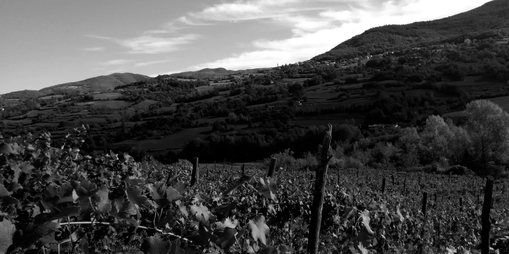
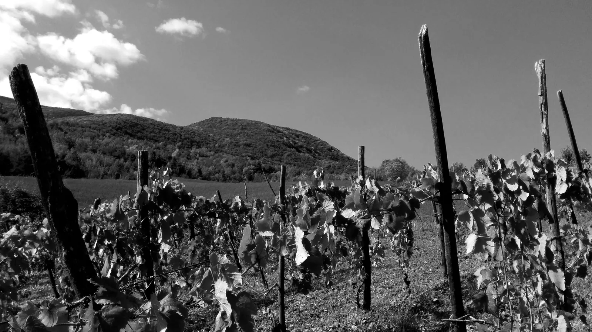
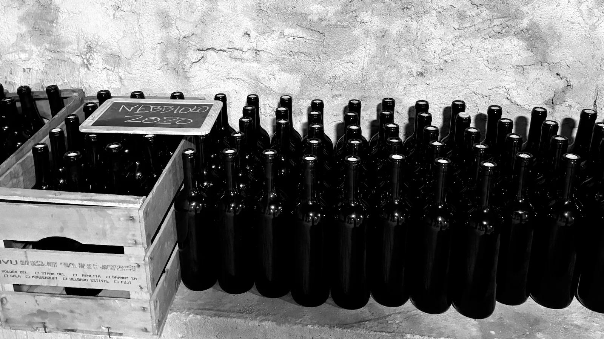

Stra
Crösa
La strada difficile.
Un vino naturale di alta collina, nato da una strada che unisce valle, borgo e cantina.
 La Stra Crösa · Casanova Staffora
La Stra Crösa · Casanova StafforaNon è solo una via fisica. È il percorso del vino dalla terra alla cantina.
02
Naming
Una strada, non un logo.
StraCrösa nasce dal dialetto locale: così gli abitanti chiamavano la strada che conduce al borgo storico di Casanova Staffora.
La marca non aggiunge ornamento. Firma un luogo reale, una scelta manuale, un modo non convenzionale di produrre vino.

Moiasse
Firagni03
I vini
Il prodotto prima della firma.

Produzione limitata04
Metodo
Nessun diserbo chimico o fitofarmaco di sintesi. Fermentazioni spontanee con lieviti autoctoni. Assenza di solfitazione o filtrazioni.